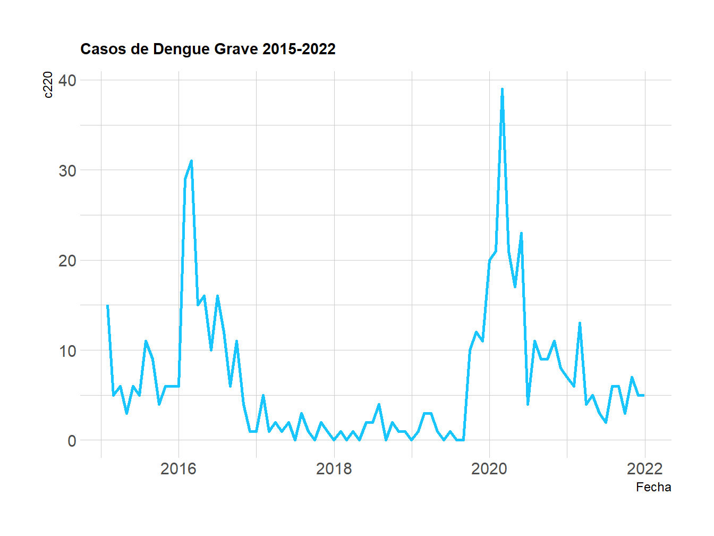

Chapter 3 Evaluación de Estacionalidad
3.1 ADF test
Se utiliza la prueba de Dickey-Fuller Aumentado (ADF) para obtener una estadística que permita confirmar o descartar la estacionalidad de la serie Casos de Dengue Grave en Cali.
3.1.1 Evaluación inicial
##
## Augmented Dickey-Fuller Test
##
## data: c220.ts
## Dickey-Fuller = -2.2133, Lag order = 4, p-value = 0.4884
## alternative hypothesis: stationaryDado que el valor de probabilidad obtenido es mayor que el nivel de significancia elegido, que en este caso es 0.05, entonces no se puede rechazar la hipótesis nula de la prueba, y se concluye que no hay evidencia suficiente para afirmar que la serie de tiempo es estacionaria.
3.1.2 Evaluación después de transformar la TS
En la búsqueda de opciones de representación se había empleado el Operador Diferencia, y dado que pareciera tener algún potencial para configurar una dinámica que visibilice ciclos periódicos, se realizó un proceso itetarivo que condujo a identificar que si se utiliza un rezago de 1 periodo, entonces, la prueba ADF generaría un resultado distinto al obtenido en la sección anterior.
c220i.ts <- diff(c220.ts, lag = 1)
adf.test(c220i.ts)##
## Augmented Dickey-Fuller Test
##
## data: c220i.ts
## Dickey-Fuller = -4.5358, Lag order = 4, p-value = 0.01
## alternative hypothesis: stationaryEn este caso el valor de probabilidad obtenido es menor que el nivel de significancia, entonces se rechaza la hipótesis nula y se concluye que la serie de tiempo transformada con el operador diferencia es estacionaria, porque su media y variana son constantes a lo largo del tiempo.
3.2 Funciones ACF y PACF
Para avanzar sobre el análisis de autocorrelación y estacionalidad de la serie de tiempo se emplean las funciones de autocorrelación (ACF) y autocorrelación parcial (PACF).
Como se muestra a continuación, los resultados obtenidos no parecen ser especialmente significativos, porque no presentan patrones especialmente destacables y no se presenta ciclos evidentes. Todo esto pareciera resaltar cierta independencia de los valores que toma la variable a lo largo del tiempo, resaltando una vez más la particularidad de la serie de tiempo, aún después de las transformaciones realizadas hasta ahora.

3.3 Separación de componentes
Ahora se presenta la descomposición de los componentes de la serie, con la intención de comprender mejor su comportamiento y tendencias a lo largo del tiempo.
library(ggplot2)
library(tidyr)
library(ggpubr)
# Convertir los componentes en un marco de datos
df <- data.frame(date = time(decomp$x),
data = as.vector(decomp$x),
trend = as.vector(decomp$trend),
seasonal = as.vector(decomp$seasonal),
remainder = as.vector(decomp$random))
df_long <- gather(df, component, value, -date)
# Crear gráficos separados para cada componente
plots <- ggplot(df_long, aes(x = date, y = value, group = component)) +
geom_line(color = "gray50", size = 0.9) +
facet_grid(component ~ ., scales = "free_y") +
theme_bw()
# Presentar los gráficos juntos utilizando ggarrange
ggarrange(plots, ncol = 1, heights = c(1, 1, 1, 0.5),
common.legend = TRUE, legend = "bottom")
La tendencia de la serie muestra varios cambios de dirección general, siendo que en algunos casos una misma dirección se mantendría por alrededor de 24 meses, pero no se podría asegurar que se trata de intérvalos fijos.
La estacionalidad presenta los patrones repetitivos más estables, que efectivamente tiene sus puntos más alto en los primeros meses del año, tal como se había anticipado anteriormente en los análisis a través del diagrama de violín.
Llama la atención que los residuos tengan un rango más amplio que los otros componentes, lo que sugeriría que hay una cantidad de información impotante que no puede ser explicada a través de los otros componentes incluidos en este análisis.
3.4 Modelo ARIMA
A continuación se aplica la función auto.arima para encontrar un modelo de ajuste eficiente.
library(forecast)##
## Attaching package: 'forecast'## The following object is masked from 'package:ggpubr':
##
## gghistogram#Aplicar un modelo ARIMA automático a la TS
fit <- auto.arima(c220i.ts)
summary(fit)## Series: c220i.ts
## ARIMA(0,0,1) with zero mean
##
## Coefficients:
## ma1
## -0.4124
## s.e. 0.0993
##
## sigma^2 = 0.9335: log likelihood = -114.51
## AIC=233.02 AICc=233.17 BIC=237.85
##
## Training set error measures:
## ME RMSE MAE MPE MAPE MASE ACF1
## Training set -0.02942845 0.96036 0.74593 NaN Inf 0.6448007 -0.009342725En este caso el resultado indica que se trata de un modelo de media móvil de orden 1 sin érmino autoregresivo ni diferenciación y con media cero. Esto implica que el modelo intentaría explicar las fluctuaciones en la serie de tiempo utilizando solo el término de media móvil, por lo que asume que las desviaciones de la serie de tiempo se deben principalmente a los errores aleatorios.
3.5 Puntos de cambio
También se intentó detectar puntos de cambio de comportamiento de la serie de tiempo.
library(changepoint)
# Aplicar la función cpt.mean() a la serie de tiempo
cpt_obj <- cpt.mean(c220i.ts, method = "AMOC")
# Mostrar los resultados
plot(cpt_obj)
La ausencia de puntos de cambio en la gráfica indica que no se tiene evidencia de que la serie de tiempo tenga puntos de cambio significativos en su media. En consecuencia, la serie de tiempo se mantiene relativamente estable sin cambios repentinos de nivel.
3.6 Predicción
Se realizó un pronóstico del valor de un mes futuro de la serie de tiempo.
La gráfica presenta tanto el valor preciso como los intérvalos de confianza. En esta oportunidad, se consideró conveniente este cortísimo plazo porque no se cuenta con la robustez necesaria para elegir un lapso más extenso.
library(forecast)
# Hacer predicciones para los próximos meses
fc <- forecast(c220i.ts, h=1)
# Mostrar las predicciones y los intervalos de confianza
plot(fc)3.7 Validación
A continuación se presenta el resultado del procedimiento realizado para detectar los valores atípicos de la serie de tiempo.
plot(data.ts.outliers)La gráfica presenta los tres valores que difieren significativamente del patrón general de la serie de tiempo y que coincidirán con los eventos inusuales identificados en secciones anteriores de este reporte.
3.8 Supuestos de una ARIMA
Finalmente, se realizó la validación de algunos supuestos de un modelo ARIMA.
3.8.1 Media cero de los residuos
mr<-fit$residuals # estos son los residuos del modelo
t.test(mr, alternative='two.sided',
conf.level=0.95, mu=0)##
## One Sample t-test
##
## data: mr
## t = -0.27762, df = 82, p-value = 0.782
## alternative hypothesis: true mean is not equal to 0
## 95 percent confidence interval:
## -0.2403046 0.1814477
## sample estimates:
## mean of x
## -0.02942845El resultado de la prueba implica que no hay suficiente evidencia para rechazar la hipótesis nula de que la media de los residuos es cero.